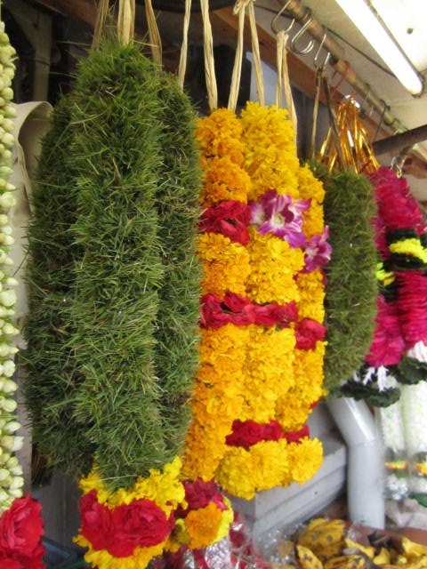

How I love you, clean street, clean subway. Believe it or not, Singapore got this rule that you are not supposed to eat when you are in subway or eat gum. For some reason when I was there I was tempted to eat gum and eat when I was in subway. They got clean subway system with people lining up to get into the subway. Unlike where I live especially winter time, it doesn't matter that you are there an hour or so waiting for very late bus. People will get you and tried to get on the bus. As much as I love the city, it was really expensive. I can't say where I live now is not expensive. But when you are in Asia and you are comparing to other countries to Singapore, be prepare for the price difference. You will be paying as much as if you are dinning out in Big Apple.
I went to every corners I think. My friend who lives there haven't even visited many of the places I visited. Chinatown, Indian town, etc. You name it, it was on my list to check it out. I couldn't be happier when I travel. But I'm sure my wallet begs to differ. More pictures will be uploaded. Stay tune.
